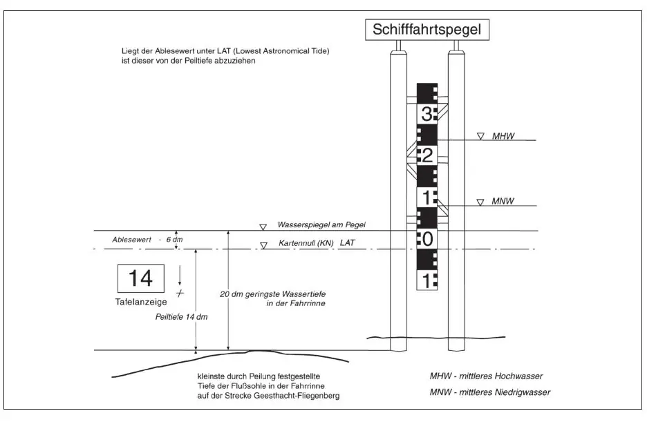

§ 17.02 Abmessungen der Fahrzeuge und Verbände, Fahrrinnentiefe und Abladetiefe
Binnenschifffahrtsstraßen-Ordnung
1. Ein Fahrzeug, ein Fahrzeug mit Seitenradantrieb oder ein schleppendes Fahrzeug darf folgende Abmessungen nicht überschreiten:
Binnenschifffahrtsstraße | Länge | Breite | |
m | m | ||
1.1 | Elbe (Talfahrt) | ||
1.1.1 | km 0,00 bis km 607,50 (Oortkaten – Grenze zum Hamburger Hafen) | ||
a) Fahrzeug | 110,00 | 11,45 | |
b) Fahrzeug mit Seitenradantrieb | 110,00 | 14,00 | |
c) schleppendes Fahrzeug | 86,00 | 11,45 | |
soweit nachfolgend nicht etwas anderes festgelegt ist | |||
1.1.2 | km 56,80 bis km 607,50 (Oortkaten – Grenze zum Hamburger Hafen) | ||
schleppendes Fahrzeug | 110,00 | 11,45 | |
1.1.3 | km 559,50 (Hafen Boizenburg) bis km 607,50 (Oortkaten – Grenze zum Hamburger Hafen) | ||
Fahrzeug | 110,00 | 22,90 | |
1.2 | Elbe (Bergfahrt) | ||
1.2.1 | km 0,00 bis km 607,50 (Oortkaten – Grenze zum Hamburger Hafen) | ||
Fahrzeug/schleppendes Fahrzeug | 110,00 | 11,45 | |
Fahrzeug mit Seitenradantrieb | 110,00 | 14,00 | |
soweit nachfolgend nicht etwas anderes festgelegt ist | |||
1.2.2 | km 559,50 (Hafen Boizenburg) bis km 607,50 (Oortkaten – Grenze zum Hamburger Hafen) | ||
Fahrzeug | 110,00 | 22,90 | |
1.3 | (weggefallen) |
2. Ein Verband darf folgende Abmessungen in Verbindung mit der Fahrrinnentiefe nicht überschreiten:
Binnenschifffahrtsstraße | Länge | Breite | Fahrrinnentiefe | |
m | m | m | ||
2.1 | Elbe (Talfahrt) | |||
2.1.1 | km 0,00 bis km 607,50 (Oortkaten – Grenze zum Hamburger Hafen) | 137,00 | 11,45 | |
soweit nachfolgend nicht etwas anderes festgelegt ist | ||||
2.1.2 | km 56,80 bis km 154,00 (Hafen Torgau) | 110,00 | 18,00 | |
2.1.3 | km 154,00 bis km 264,10 (Hafen Rosslau) | 110,00 | 18,00 | |
145,00 | 11,45 | |||
— ein Verband mit einer Länge von mehr als 137,00 m und einer Breite von nicht mehr als 11,45 m darf nur fahren, wenn der Wasserstand am Pegel Lutherstadt Wittenberg mindestens 280 cm beträgt und der Verband mit einer aktiven Bugsteuereinrichtung ausgerüstet ist oder der Verband mit einem Vorspann verkehrt – | ||||
2.1.4 | km 264,10 bis km 332,50 | 145,00 | 22,90 | |
2.1.5 | km 332,50 bis km 454,80 | 145,00 | 22,90 | |
165,00 | 18,00 | gilt nur bei bekannt gemachter Fahrrinnentiefe von > 2,20 | ||
2.1.6 | km 454,80 bis km 569,20 | 190,00 | 24,00 | |
2.1.7 | km 569,20 bis km 573,00 | 190,00 | 24,00 | 2,30 gilt nur bei einem Wasserstand von ≥ 4,30 m am Pegel Hohnstorf |
2.1.8 | km 573,00 bis km 585,86 | 190,00 | 24,00 | 3,20 gilt nur bei einem Wasserstand von ≥ 4,30 m am Pegel Hohnstorf |
2.1.9 | km 585,86 bis km 607,50 (Oortkaten – Grenze zum Hamburger Hafen) | 190,00 | 24,00 | |
2.2 | Elbe (Bergfahrt) | |||
2.2.1 | km 607,50 (Oortkaten – Grenze zum Hamburger Hafen) bis km 0,00 | 137,00 | 11,45 | |
soweit nachfolgend nicht etwas anderes festgelegt ist | ||||
2.2.2 | km 607,50 (Oortkaten – Grenze zum Hamburger Hafen) bis km 585,86 | 190,00 | 24,00 | |
2.2.3 | km 585,86 bis km 573,00 | 190,00 | 24,00 | 3,20 gilt nur bei einem Wasserstand von ≥ 4,30 m am Pegel Hohnstorf |
2.2.4 | km 573,00 bis km 569,20 | 190,00 | 24,00 | 2,30 gilt nur bei einem Wasserstand von ≥ 4,30 m am Pegel Hohnstorf |
2.2.5 | km 569,20 bis km 454,80 | 190,00 | 24,00 | |
2.2.6 | km 454,80 bis km 264,10 (Hafen Rosslau) | 110,00 | 22,90 | |
137,00 | 19,70 | |||
172,00 | 11,45 | |||
172,00 | 19,70 | gilt nur bei bekannt gemachter Fahrrinnentiefe von > 2,00 | ||
190,00 | 11,45 | gilt nur bei bekannt gemachter Fahrrinnentiefe von > 2,00 | ||
2.2.7 | km 264,10 bis km 56,80 | 170,00 | 11,45 | |
— ein Verband mit einer Länge von mehr als 137,00 m und einer Breite von nicht mehr als 11,45 m darf nur fahren, wenn der Wasserstand am Pegel Lutherstadt Wittenberg mindestens 320 cm beträgt und der Verband mit einer aktiven Bugsteuereinrichtung ausgerüstet ist oder der Verband mit einem Vorspann verkehrt –. |
3. Als Verband im Sinne der Nummer 2 gelten nur ein Schubverband und gekuppelte Fahrzeuge.
4. Die Fahrrinnentiefe auf der Elbe richtet sich nach dem Wasserstand. Die geringste Fahrrinnentiefe wird von der zuständigen Behörde täglich bekannt gemacht. Abweichend von Satz 2 beträgt die Fahrrinnentiefe
a) von km 569,20 bis km 573,00 2,30 m und
b) von km 573,00 bis km 585,86 3,20 m
bei einem Wasserstand von mindestens 4,30 m am Pegel Hohnstorf. Bei der Wahl der Abladetiefe sind die Fahrrinnentiefen nach Satz 2 und 3 sowie die aktuelle Wasserstandsentwicklung zu berücksichtigen. Im Tidebereich unterhalb der Doppelschleuse Geesthacht kann die vorhandene Fahrrinnentiefe an den Schifffahrtspegeln bei km 586,30, 594,70 und 601,70 in Verbindung mit der Peiltiefe auf den weißen Tafeln am Schleusensteuerstand in Geesthacht bzw. am Pegelhaus Over bei km 605,30 abgelesen werden. An den Schifffahrtspegeln ist in Metern und Dezimetern ablesbar, um wie viel der Wasserstand zurzeit des Passierens über (schwarze Meterzahlen in weiß/roten Feldern) oder unter (rote Meterzahl in schwarz/weißen Feldern) dem Nullpunkt des Schifffahrtspegels liegt. Die weißen Tafeln mit schwarzem Rand zeigen eine rote Zahl, die in Dezimetern die Peiltiefe, bezogen auf den Nullpunkt des Schifffahrtspegels, angibt.

5. Die Abmessungen, Fahrrinnentiefen und Abladetiefen nach den Nummern 1, 2 und 4 gelten nicht auf den Stich- und Altkanälen, Nebenarmen und sonstigen Nebenwasserstraßen der Hauptwasserstraßen, soweit diese nicht gesondert aufgeführt sind.